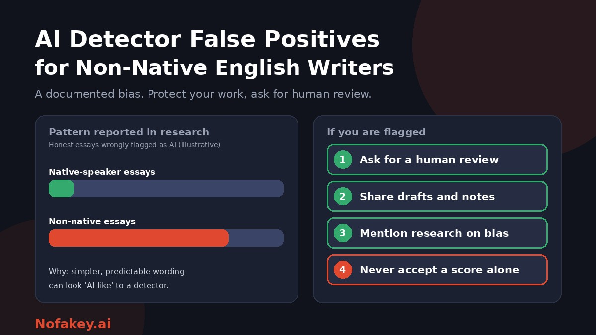

You wrote every word yourself, carefully, in your second or third language. Then a detector says your essay is probably AI-generated. If that sounds familiar, you are not imagining a pattern. Research has found that AI detectors flag writing by non-native English speakers as machine-made far more often than writing by native speakers. This guide explains what the research found, why it happens, how to protect yourself, and what teachers, editors and employers should do instead.
What the research found
In 2023, researchers from Stanford University published a peer-reviewed study (Liang and colleagues, in the journal Patterns) that tested several widely used AI detectors on essays by non-native English speakers and by native speakers. The pattern was clear:
- Essays by native English-speaking students were mostly judged correctly as human-written.
- More than half of the essays by non-native English speakers were wrongly flagged as AI-generated across the detectors tested, and some detectors flagged nearly all of them.
- The researchers linked this to how detectors work. They tend to treat richer, more varied language as "human," so writers with a more limited range of words and sentence patterns are penalised.
Some institutions reacted. A number of universities reviewed or switched off AI detection features, citing false positives and fairness concerns.
What detector companies say
Vendors have responded. At least one major provider published its own test and reported no statistically significant difference between non-native and native writers for texts above a minimum length. Others say they have retrained their tools since 2023. Two cautions apply. These results come from the vendors themselves, and independent, peer-reviewed results for non-native writing remain scarce. Until a tool publishes credible figures for non-native writing, assume the risk is still there.
Why it happens
Most detectors judge how predictable a text is and how much its sentences vary. People who write in a second language often, and sensibly, do the following:
- Use a narrower, safer range of vocabulary, choosing words they are confident about.
- Prefer standard structures and phrases learned from textbooks, exam preparation and model essays.
- Write in a clear, formal register to avoid mistakes, which produces even, regular sentences.
- Use grammar, translation and rewriting tools, which smooth text further.
- Write short pieces in a tight format, such as exam answers, where there is little room for variety.
These are signs of careful, honest writing. To a detector, they can look like machine text. See are AI detectors accurate? for the wider problem.
Where it shows up
| Situation | The risk | What helps |
|---|---|---|
| Student essays and exams | Wrongly accused of misconduct, with grades or visas at stake | Process evidence, a human review, and a clear appeals route |
| Job applications and cover letters | Polished application rejected by an automated screen | Specific examples, live follow-up, and ask for human review. See AI-generated cover letters |
| Freelance and content work | Unpaid or rejected on a detector score | Contracts that name evidence beyond a score, and drafts shared with the client |
| Journal and research submissions | Papers flagged because of formal, standard academic phrasing | Editors checking citations and data, not just scores. See AI-generated research paper detection |
| Online platforms and publishers | Non-native voices filtered out | Human moderation and bias testing |
If you write in English as an additional language: protect yourself
- Know the rules. Check your school's, employer's or client's policy on AI and on writing tools. Ask if it is unclear.
- Keep process evidence. Write in a tool that saves version history, and keep notes, outlines, drafts and sources. Notes in any language count.
- Keep earlier writing samples that show your usual style and level, in case someone compares.
- Add your own specifics. Real examples, your reasoning and your sources make work yours and make it more useful, whatever any detector says.
- Disclose tool use where required. If grammar, translation or AI help is allowed with disclosure, note it briefly and keep before-and-after versions.
- Be ready to discuss your work. If you wrote it, you can explain it, even in simple words.
- Mention your language background early if you are worried, for example in a note or to a teacher or editor.
What not to do
- Do not use "AI humanizers" or ask an AI to rewrite your work to lower a score. It can break your school's or employer's rules, it does not prove you wrote the work, and it can make your writing worse. See ChatGPT text detector for students.
- Do not delete drafts, notes or history if you are questioned.
- Do not hide AI or tool use that you were required to disclose.
- Do not paste private work into free detectors without checking how they handle your text.
If your work is flagged
- Stay calm and polite. It is a reasonable concern, even though the result may be wrong.
- Ask for details. Which tool, what score, and what else is the concern based on?
- Share your process evidence: version history, notes, drafts and sources.
- Explain your language background and point out that research has found AI detectors can flag non-native writing wrongly.
- Ask for a human review and offer to talk through your work, or to complete a short follow-up task such as explaining a paragraph or writing a few sentences on the topic.
- Ask about the appeal process and the timeline.
- Get support. International student services, a union, a tutor or a trusted adult can help you prepare.
Sample message (adapt to your situation)
Thank you for letting me know. I wrote this work myself. English is my second language, and research has found that AI detectors can wrongly flag non-native writing. I have my notes, drafts and version history and would be glad to share them and to discuss the work. Could we arrange a human review, and could you tell me which tool and result were used and how I can appeal?
For teachers, universities, editors and employers
- Never treat a detector score as sole evidence. A score is a prompt for a closer look, not a verdict.
- Test tools on non-native writing. Use samples that resemble your own population, and look at false positives for that group.
- Ask vendors for non-native false-positive results, with methods you can check, not just overall accuracy.
- Compare with the writer's earlier work and look at drafts and process.
- Talk to the writer first, and consider a short oral or follow-up task.
- Offer fair alternatives, and give a clear route to appeal. See AI detector policy for universities.
- Train staff on language background and what a false positive looks like.
- For publishers and hiring teams, see AI detectors for publishers and editors and AI detection tools for HR teams.
Grammar tools, translation and AI help
Many non-native writers use grammar checkers, translation tools or AI to understand and polish their writing, and that is often legitimate. Rules differ, so:
- Check what is allowed for each assignment, job or publication.
- Disclose where required, in plain words. See how to label AI-generated content for wording you can adapt.
- Keep your own draft alongside the polished version so you can show what you wrote.
- Use tools to learn, not to replace your own ideas and thinking.
If a link, offer or message connected to your work looks suspicious, you can paste it into our free checker for a quick first read. It is not a text detector for essays.
Conclusion
AI detectors can and do flag honest non-native English writing, and the best-known research found it happened far more often than for native speakers. That makes a score a poor basis for accusing anyone. If you write in a second language, keep your process evidence, add your own specifics, follow the rules and ask for human review if you are flagged. If you judge other people's writing, treat a score as a question, test your tools on non-native samples and talk to the writer. Find more guides on the Nofakey.ai blog.
Frequently asked questions
Do AI detectors discriminate against non-native English writers?
Research published in 2023 found that several widely used detectors wrongly flagged more than half of essays by non-native English speakers as AI-generated, while rarely flagging essays by native speakers. Vendors have updated their tools since, but few publish independent results for non-native writing.
Why are non-native writers flagged more often?
Detectors look for predictable wording and uniform sentence structure. Writers working in a second language often use a narrower range of words and more standard phrasing, which can resemble those patterns even though a person wrote the text.
Should I rewrite my work to avoid being flagged?
Do not deliberately simplify or distort your writing, and do not have an AI rewrite it to lower a score. Instead, keep evidence of your process, add your own specific examples and reasoning, and follow your school’s or employer’s AI rules.
What should I do if my work is wrongly flagged?
Stay calm, keep your drafts and notes, explain your language background, point out that detectors can be biased, ask for a human review, and offer to discuss your work. Ask about the appeal process.
What should teachers and editors do about this bias?
Never use a detector score as the sole evidence, test any tool on non-native writing samples, ask vendors for non-native false-positive results, compare with the writer’s earlier work, and talk to the writer before any decision.
Got a suspicious link, offer or message to check?
Run it through the checker